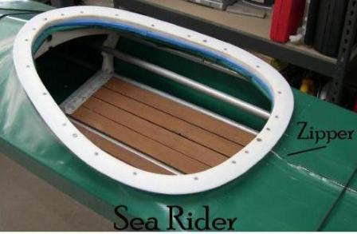

| Zipper Assembly (6 of 7) | Menu Last Page Next Page |
|
 |
The Sea Rover zipper is attached to the forward deck. The zipper slider is located inside the coaming. The slider could also be located at the bow.
Due to it's forward deck location, the zipper is longer than if located on the aft deck. Also, the longer, sloping forward deck makes zipper installation a bit more difficult. An advantage to the forward deck location is the ease of sliding the frame in or out of the shorter aft skin during kayak assembly.
The Sea Rider has an aft deck zipper location with the slider positioned at the stern. The zipper is shorter in this setup, plus the flat deck makes installation easier. Though not a problem, the longer forward deck with it's more compound shape makes sliding the frame in and out just a bit more difficult. Overall, this is probably the better solution.
|